전자계산기제어산업기사 (2013-03-10 기출문제)
1과목: 전자회로
1. 다음과 같은 연산증폭기회로의 출력으로 적합한 것은?
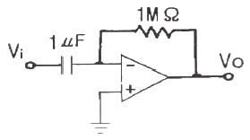
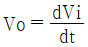
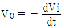
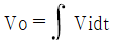
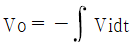
(정답률: 70%)

2. 다음 회로의 파형으로 옳은 것은?
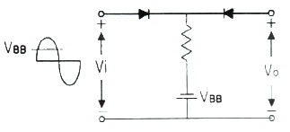
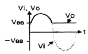
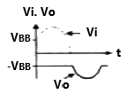
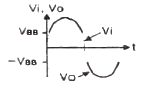
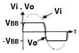
(정답률: 알수없음)
3. 교차 일그러짐(crossover distortion) 현상은 어느 증폭기에서 발생하는가?
- A급 증폭기
- AB급 증폭기
- B급 증폭기
- A, B 및 AB급 증폭기 모두 교차 일그러짐 현상이 발생한다.
(정답률: 알수없음)
4. 여러 개의 신호들을 조합하여 하나의 신호를 선택하는 것은?
- 레지스터
- 버퍼
- 라인 트랜시버
- 디멀티플렉서
(정답률: 알수없음)
5. 궤환이 걸리지 않을 때의 증폭회로의 전압이득을 A, 궤환율을 β라 할 때 발진 조건은?
- Aβ ＜ 1
- A = -β
- Aβ ≥ 1
- A = β
(정답률: 알수없음)
6. 직·병렬저항 RC 이상형 발진회로의 발진 주파수로 옳은 것은?
- 직렬저항 RC 이상형 발진회로의 발진 주파수 :
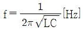
- 직렬저항 RC 이상형 발진회로의 발진 주파수 :
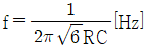
- 병렬저항 RC 이상형 발진회로의 발진 주파수 :
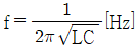
- 병렬저항 RC 이상형 발진회로의 발진 주파수 :

(정답률: 알수없음)
7. 다음 회로는 어떤 목적에 이용될 수 있는가?
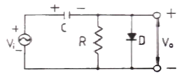
- 클램핑(Clamping)
- 클리핑(Clipping)
- 정류기(Rectifier)
- 변조(Modulation)
(정답률: 알수없음)
8. 펄스 부호 변조 방식에 대한 설명으로 옳은 것은?
- 샘플-홀드(sample-hole) 회로를 이용한다.
- 신호파의 진폭을 양자화하여 2진법으로 표현하는 방식이다.
- 펄스의 주기, 폭은 일정하고 진폭을 입력 신호 전압에 따라 변화시키는 방식이다.
- 신호 레벨의 증감을 △만큼 변화되는 계단파에 근사시키고 그것을 음양의 펄스로 변환시킨다.
(정답률: 알수없음)
9. 전압이득이 40[dB]인 저주파 증폭기에서 출력신호의 왜율이 10[%]일 때, 이를 1[%]로 개선하기 위해서는 부궤환율(β)은 얼마로 하여야 하는가?
- 0.01
- 0.03
- 0.⑤
- 0.09
(정답률: 알수없음)
10. 다음 FET 증폭회로의 전압증폭도는 약 얼마인가? (단, μ = 500, rd = 100[kΩ] 이다.)
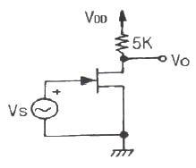
- -15
- -24
- -32
- -45
(정답률: 알수없음)
11. 그림과 같은 발진회로에 관한 설명 중 옳은 것은?
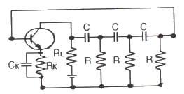
- C와 R을 사용하여 부궤환으로 발진시키는 것이다.
- 다이나트론에 의한 부성저항과 C로 발진시킨 것이다.
- 발진을 계속하기 위해서는 증폭도가 29 이상이 되어야 한다.
- 컬렉터의 LC 동조회로를 C 및 R로 베이스에 결합한 것이다.
(정답률: 알수없음)
12. 다음 중 SSB 검파기로 사용되지 않는 것은?
- 비 검파기
- 링 검파기
- 승적 검파기
- 싱크로다인 검파기
(정답률: 알수없음)
13. 전류 증폭률 α와 β에 관계식으로 옳지 않은 것은?
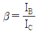
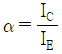
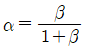
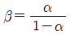
(정답률: 알수없음)
14. α = 0.98, ICO = 20[μA]의 값을 가지는 트랜지스터를 이미터 접지로 하면 컬렉터 차단전류 ICEO는 몇 [μA]로 되는가?
- 19.6[μA]
- 20[μA]
- 980[μA]
- 1000[μA]
(정답률: 알수없음)
15. 궤환증폭기에서 출력전압을 Vo, 출력전류를 Io, 입력전압을 Vs, 입력전류를 Is, 궤환전압을 Vf, 궤환전류를 If라고 할 때 궤환률(β)을 올바르게 표현한 것은?
- 직렬-전류 궤환회로는 β는 Vf/Io 이다.
- 직렬-전압 궤환회로는 β는 Vo/If 이다.
- 병렬-전압 궤환회로는 β는 Vf/Vo 이다.
- 병렬-전류 궤환회로는 β는 Io/If 이다.
(정답률: 알수없음)
16. 그림과 같은 회로에서 RL에 4[mA] 전류를 흘려주려고 한다. RL 값은?
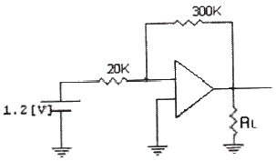
- 2.5 [kΩ]
- 4.5 [kΩ]
- 3.5 [kΩ]
- 5.5 [kΩ]
(정답률: 70%)
17. 다음 중 신호의 일그러짐이 가장 적고 안정한 증폭기는?
- A급
- B급
- C급
- AB급
(정답률: 알수없음)
18. 다음 회로에서 Zener에 인가되는 전압은 몇 [V] 인가? (단, Vo = -10.3[V] 이다.)
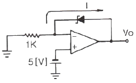
- -4.3[V]
- -5.3[V]
- 15.3[V]
- 9.3[V]
(정답률: 70%)
19. 단일 증폭기와 비교한 B급 푸시풀 증폭기의 특징으로 적합하지 않은 것은?
- 효율이 더 높다.
- 더 큰 출력을 얻는다.
- 전원의 맥동에 의한 잡음이 제거된다.
- 기수 고조파에 의한 일그러짐이 감소된다.
(정답률: 알수없음)
20. 다음 중 상보대칭(complementary symmetry) SEPP 회로의 장점은?
- 같은 크기의 부하일 경우 DEPP 보다 출력이 크다.
- 단전원 방식일 경우 DEPP 보다 컬렉터 공급 전원이 높다.
- 위상 반전 회로가 불필요하다.
- 입력 회로가 복잡하지 않다.
(정답률: 46%)
2과목: 디지털공학
21. 5비트 레지스터에 부호-2의 보수로 나타낸 2진 정보 11010 이 들어있다. 이것을 좌향 산술 시프트했을 때 결과는?
- 10101
- 01010
- 10100
- 01100
(정답률: 알수없음)
22. 다음 불(Boolean) 식을 간단히 한 결과 Y는?
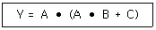
- Y = A + B + C
- Y = A ⦁ B ⦁ C
- Y = B ⦁ C
- Y = A ⦁ (B + C)
(정답률: 알수없음)
23. 다음 진리표(truth table)를 간략히 한 결과 Y는?
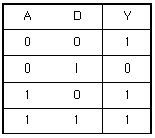
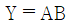
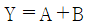
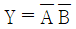
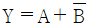
(정답률: 91%)
24. A = 0101, B = 1000의 두 3초과코드 수를 합산한 결과는?
- 0101
- 1010
- 1000
- 0111
(정답률: 40%)
25. 2비트 두 수 A(A1 A2)와 B(B1 B2)의 크기를 비교해서 3개의 출력 X(A＞B),Y(A=B), Z(A＜B)를 출력하는 비교기의 논리함수를 구하면?
- X = A1B1′+(A1⊕B1)′A2B2′
Y = (A1⊕B1)′ (A2⊕B2)′
Z = A1′B1 + (A1⊕B1)′A2′B2 - X = A1B1′+(A1⊕B1)′A2B2′
Y = (A1⊕B1) (A2⊕B2)
Z = A1′B1 + (A1⊕B1)A2′B2 - X = A1B1+(A1⊕B1)′A2′B2′
Y = (A1⊕B1) (A2⊕B2)
Z = A1′B1 + (A1⊕B1)A2′B2 - X = A1B1′+(A1⊕B1)A2B2′
Y = (A1⊕B1)′ (A2⊕B2)′
Z = A1′B1 + (A1⊕B1)A2′B2
(정답률: 알수없음)
26. Shift register 안에 있는 binary number가 5번 Shift left 되었다. 현재 nimber 크기는 다음 중 어느 것에 해당되는가? (단, shift register의 길이는 충분하며 shift-in 되는 bit는 모두 0 이다.)
- 맨 처음 binary number × 5
- 맨 처음 binary number ÷ 5
- 맨 처음 binary number × 32
- 맨 처음 binary number ÷ 32
(정답률: 알수없음)
27. 그림과 같은 회로도의 출력 F는?
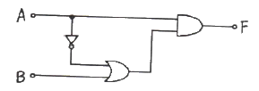
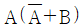
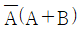
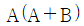
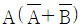
(정답률: 알수없음)
28. 다음 회로를 NOR 회로로 변경한 것으로 옳은 것은?
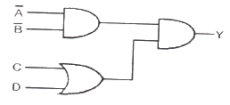
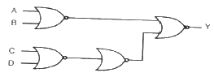
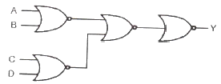
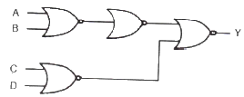
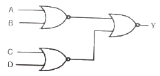
(정답률: 알수없음)
29. 레즈스터에 대한 설명으로 틀린 것은?
- 순차논리회로의 일종이다.
- 병렬레지스터는 데이터 저장과 연산에 사용된다.
- 시프트레지스터는 종속적으로 연결되어 있다.
- 직렬데이터를 병렬데이터로 변환할 수도 있다.
(정답률: 알수없음)
30. 그림의 디코더 X, Y에 각각 “1”와 “0”이 입력되었을 때 “1”을 출력하는 단자는?
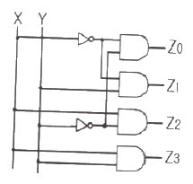
- Z0
- Z1
- Z2
- Z3
(정답률: 알수없음)
31. 논리식 중 옳지 않은 것은?
- A + 0 = A
- A ⦁ 1 = A
- AB + AB = AB
- A(B + C) = AC
(정답률: 알수없음)
32. Exclusive-NOR gate의 출력값은?
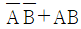
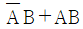
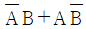
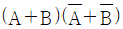
(정답률: 알수없음)
33. 디코더의 출력 선이 8개라면 입력 선은 몇 개인가?
- 1
- 2
- 3
- 4
(정답률: 알수없음)
34. 그림과 같은 구성도는 어떤 형의 플립플롭인가?
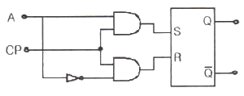
- D 플립플롭
- T 플립플롭
- RS 플립플롭
- JK 플립플롭
(정답률: 알수없음)
35. 6비트 D/A 변환기의 백분율 분해능은?
- 약 0.15[%]
- 약 1.59[%]
- 약 15.9[%]
- 약 159[%]
(정답률: 알수없음)
36. 한 번 기록한 데이터를 빠른 속도로 읽을 수 있찌만 다시 기록할 수 없는 메모리는?
- RAM
- ROM
- 레지스터
- 주소
(정답률: 50%)
37. 다음 2진수를 16진수로 나타낸 것은?
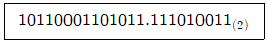
- 2C6B.E98(16)
- 2C6B.E91(16)
- B1A2.E98(16)
- B1A2.E91(16)
(정답률: 알수없음)
38. A＞B 일 때 Y = 1인 회로는?
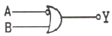
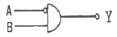
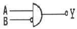
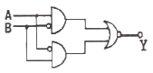
(정답률: 알수없음)
39. 그림과 같은 다이오드 회로의 논리식으로 옳은 것은? (단, 정논리임)
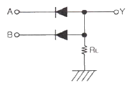
(정답률: 알수없음)
40. 2개의 레벨 트리거 플립플롭이 직렬로 연결된 구성을 갖는 플립플롭은?
- T
- RS
- M/S
- JK
(정답률: 알수없음)
3과목: 마이크로프로세서
41. 다음 중 타이머/카운터의 기능이 아닌 것은?
- 메모리의 번지를 증감시키는 기능
- 하나의 출력과 다음 출력간의 시간을 계산하는 기능
- 직렬 포트로 보레이트(Baud Rate)를 발생시키는 기능
- 일정 시간을 같은 출력으로 유지하는 기능
(정답률: 알수없음)
42. 두 지점 간의 직렬 데이터 전송 방법이 아닌 것은?
- 단방향(Simplex) 전송
- 반이중(Half-Duplex) 전송
- 전이증(Full-Duplex) 전송
- 스토로빙(Strogbing) 전송
(정답률: 알수없음)
43. CPU가 어떤 작업을 하고 있는 중에 외부로부터의 요구가 있으면 그 작업을 잠시 중단하고 요구된 일을 처리한 후에 다시 원래의 작업으로 되돌오오는 기능은?
- DMA
- interrupt
- time sharing
- subroutine
(정답률: 알수없음)
44. 직렬통신 방식 중 “1”은 –3V ~ -15V, “0”은 +3V ~ +15V 사이의 전압 신호로 구현되는 방식은?
- RS-232C
- RS-422
- RS-423
- IEEE-488
(정답률: 알수없음)
45. 플래그 레지스터(Flag Register)중에서 연산명령 실행 후 영향 받는 레지스터는?
- 디렉션 플래그(Direction Flag)
- 인터럽트 플래그(Interrupt Flag)
- 패리티 플래그(Parity Flag)
- 트랩 플래그(Trap Flag)
(정답률: 알수없음)
46. AD 변환기 중 속도와 정확도 등 종합선능이 좋아 가장 많이 사용하는 방식은?
- 병렬 비교 방식
- 카운터 비교기 방식
- 2중 적분 방식
- 순차 근이 방식
(정답률: 알수없음)
47. UART 에 대한 설명으로 틀린 것은?
- UART의 원어는 Universal Asynchronous Receiver Transmitter 이다.
- Start bit가 필요하다.
- 8비트 UART의 구성은 1개의 Start bit, 8개의 Data bit, 1개의 Stop bit 이다.
- 9비트 UART의 구성은 1개의 Start bit, 9개의 Data bit 이다.
(정답률: 알수없음)
48. 다중-인터럽트 선들을 사용하는 방식에 대한 설명과 거리가 먼 것은?
- 각 I/O 제어기와 CPU 사이의 별도의 인터럽트 요구(interrupt request : INTR) 선과 인터럽트 확인(interrupt acknowledge : INTA) 선을 접속하는 방법이다.
- CPU가 인터럽트를 요구한 장치를 쉽게 찾아낼 수 있다.
- 하드웨어가 복잡하고, 접속 가능한 I/O 장치들의 수가 CPU의 인터럽트 요구 입력 핀의 수에 의해 제한된다.
- CPU가 모든 I/O 제어기들에 접속된 TEST I/O 선을 이용하여 인터럽트를 요구한 장치를 검사하는 방식이다.
(정답률: 알수없음)
49. 마이크로프로세서의 기억 장치에 기억 장소를 식별하기 쉽도록 기억 장소마다 번호가 붙여져 있다. 이 번호를 무엇이라 하는가?
- byte
- bit
- location
- address
(정답률: 알수없음)
50. 다음 레지스터의 내용을 오른쪽으로 3번 이동(SHIFT RIGHT) 시켰다. 실제로 이 레지스터는 무엇을 하였는가?
- Multiplied by 4
- Divide by 3
- Added 400
- Divide by 8
(정답률: 알수없음)
51. 마이크로프로세서 명령어 사이클의 순서가 옳은 것은?
- 명령어 패치 ⇒ 명령어 실행 ⇒ 명령어 해독
- 명령어 해독 ⇒ 명령어 패치 ⇒ 명령어 실행
- 명령어 실행 ⇒ 명령어 해독 ⇒ 명령어 패치
- 명령어 패치 ⇒ 명령어 해독 ⇒ 명령어 실행
(정답률: 알수없음)
52. 마이크로프로세서의 내부 버스와 거리가 먼 것은?
- 주소 버스
- 명령 버스
- 데이터 버스
- 제어 버스
(정답률: 알수없음)
53. 주기억 장치에서 캐시 메모리로 데이터를 전송하는 것을 무엇이라고 하는가?
- 매핑 프로세서
- 스토어
- 로드
- 세이브
(정답률: 알수없음)
54. 인터럽트 발생 시 프로그램 카운터(PC)에 기억되어지는 주소는?
- 사전에 설정된 주소
- 서브루틴의 시행될 주소
- 프로그램이 시작되는 원래(Origin) 주소
- 동작이 중단된 프로그램으로 다시 돌아갈 주소
(정답률: 64%)
55. 마이크로컴퓨터에서 자료의 표현 단위로 옳게 나열된 것은?
- 비트-1bit, 니블-4bit, 바이트-8bit
- 비트-1bit, 바이트-4bit, 니블-8bit
- 니블-1bit, 비트-4bit, 바이트-8bit
- 니블-1bit, 바이트-4bit, 비트-8bit
(정답률: 알수없음)
56. 입력범위가 –10[V] ~ +10[V]에 이르는 8비트 AD변환기가 있다고 가정하자. 어떤 아날로그 입력이 가해져서 AD변환을 하여 Digital로 변환된 값이 128이었다면 AD변환기 입력단에 가해진 전압은?
- -10[V]
- -5[V]
- 0[V]
- +5[V]
(정답률: 64%)
57. 인터럽트에 의한 처리로 적합하지 않은 것은?
- 정전으로 인한 전원 차단시 보조 전원을 이용, 메모리 내의 내요을 보관해야 하는 경우
- 주변장치들이 중앙처리장치에게 입출력 동작을 요구한 경우
- 사용자 프로그램이 부 프로그램을 호출하는 경우
- 연산 중 오버플로우 혹은 언더플로우가 발생하는 경우
(정답률: 50%)
58. 전원이 차단되어도 데이터는 그대로 유지할 수 있고, 마이크로프로세서에서 직접 읽기 쓰기가 가능한 소자는?
- ROM
- RAM
- EEPROM
- Relay
(정답률: 알수없음)
59. 명령 코드에 대한 설명 중 틀린 것은?
- 명령 코드는 실행도리 동작 부분만을 기술한다.
- 하나의 동작코드는 마이크로 동작의 집합으로 볼 수 있으므로 매크로 동작이라고 한다.
- 명령 코드는 컴퓨터에 어떤 특별한 동작을 수행할 것을 알리는 비트들의 집합이다.
- 동작은 컴퓨터 메모리에 저장된 명령어의 일부로서 컴퓨터에게 특수한 동작을 실해하도록 명령하는 2진 코드이다.
(정답률: 67%)
60. 다음 중 A/D를 이용하여 만들 수 있는 장치가 아닌 것은?
- 접점(Relay) 출력
- 온도값 입력
- 광량 측정
- 전압 측정
(정답률: 알수없음)
4과목: 프로그래밍언어
61. 컴파일 과정 중에서 프로그램의 각 문장을 토큰으로 구분하는 단계는?
- 어휘분석 단계
- 구문분석 단계
- 의미 단계
- 코드 최적화 단계
(정답률: 알수없음)
62. 고급 언어에 대한 설명으로 옳지 않은 것은?
- 번역 과정 없이 직접 실행 가능하다.
- 사람 중심의 언어이다.
- 상이한 기계에서 별다른 수정 없이 실행 가능하다.
- 프로그램을 작성하거나 이해하기 쉽다.
(정답률: 알수없음)
63. C 언어에 대한 설명으로 옳지 않은 것은?
- 구조적 프로그래밍이 가능하다.
- 이식성이 높은 언어이다.
- 시스템 소프트웨어를 작성하기에 편리하다.
- 기계어에 해당한다.
(정답률: 알수없음)
64. 어셈블리어에서 어떤 기호적 이름에 상수 값을 할당하는 명령은?
- ORG
- ASSUME
- INCLUDE
- EQU
(정답률: 90%)
65. 어셈블리어에서 서브루틴을 호출하는 명령은?
- LOOPE
- JMP
- CALL
- LOOP
(정답률: 90%)
66. 원시 프로그램을 기계어 프로그램으로 번역하는 대신에 기존의 고수준 컴파일러 언어로 전환하는 역할을 수행하는 것은?
- 링키지 에디터(linkage editor)
- 인터프리터(interpreter)
- 컴파일러(compiler)
- 프리프로세서(preprocessor)
(정답률: 80%)
67. C 언어에서 사용하는 기억클래스가 아닌 것은?
- AUTOMATIC
- REGISTER
- STATIC
- INTERNAL
(정답률: 알수없음)
68. 예약어에 대한 설명으로 거리가 먼 것은?
- 대부분의 언어는 핵심어를 예약어로 사용하고 있기 때문에 while, if 등은 변수로 지정할 수 없다.
- 프로그램 판독성이 증가한다.
- 프로그램의 신뢰성을 향상시켜 줄 수 있다.
- 프로그램에서 변수명으로 사용할 수 있다.
(정답률: 알수없음)
69. 컴파일러의 컴파일 단계를 바르게 나열한 것은?
- 어휘분석 → 구문분석 → 코드 최적화 → 중간코드 → 목적코드
- 어휘분석 → 구문분석 → 중간코드 → 코드 최적화 → 목적코드
- 어휘분석 → 구문분석 → 중간코드 → 목적코드 → 코드 최적화
- 구문분석 → 어휘분석 → 코드 최적화 → 중간코드 → 목적코드
(정답률: 알수없음)
70. C 언어에서 반드시 포함해야 하는 것은?
- 주석문
- maiin 함수
- 출력문
- 할당문
(정답률: 알수없음)
71. 어셈블리어에서 라이브러리에 기억된 내용을 프로시저로 정의하여 서브루틴으로 사용하는 것과 같이 사용할 수 있도록 그 내용을 현재의 프로그램 내에 포함시켜 주는 명령은?
- EXTRN
- ORG
- SEGMENT
- INCLUDE
(정답률: 알수없음)
72. 어셈블리어에 대한 설명으로 옳지 않은 것은?
- 고급 프로그램과 비교할 때 실행 속도가 빠르다.
- 기계어를 사용하기 쉽도록 만든 기호화 언어이다.
- 컴퓨터 기종마다 공통된 프로그램을 사용할 수 있다.
- 기계어보다 프로그램 작성하기가 쉽다.
(정답률: 94%)
73. C 언어에서 사용되는 이스케이프 시퀀스와 그 의미의 연결이 옳지 않은 것은?
- \r : carriage return
- \t : rab
- \n : new lline
- \b : null character
(정답률: 75%)
74. 어셈블리어 명령에서 다음 설명에 해당하는 것은?
- EJECT
- ASSUME
- EXTERN
- PUBLIC
(정답률: 알수없음)
75. 기계어에 대한 설명으로 옳지 않은 것은?
- 프로그램의 유지보수가 용이하다.
- 호환성이 없고 기계마다 언어가 다르다.
- 2진수를 사용하여 데이터를 표현한다.
- 프로그램의 실행 속도가 빠르다.
(정답률: 알수없음)
76. C 언어에서 데이터 형식을 규정하는 서술자로서의 의미가 옳지 않은 것은?
- %x : 16진수 정수
- %s : 문자열
- %c : 문자
- %d : 8진수 정수
(정답률: 알수없음)
77. 어셈블리어에서 논리적인 비교와 결과가 양수 또는 음수인지를 검사하여 상태 레지스터의 상태 비트를 설정하는 명령은?
- LEA
- TEST
- CWD
- NEG
(정답률: 70%)
78. BNF 표기법에서 정의를 나타내는 기호는?
- |
- ::=
- ＜ ＞
- { }
(정답률: 알수없음)
79. 매크로 프로세서의 기본적 수행 기능에 해당하지 않는 것은?
- 매크로 정의 확장
- 매크로 확장 및 인수 치환
- 매크로 정의 저장
- 매크로 호출 인식
(정답률: 64%)
80. C 언어에서 사용하는 데이터 형식이 아닌 것은?
- double
- long
- character
- float
(정답률: 92%)
이유는 다음과 같습니다.
- 입력 신호가 양수일 때: 입력 신호가 양수인 경우, Q1은 커지고 Q2는 작아져서 출력 신호가 양수로 증폭됩니다.
- 입력 신호가 음수일 때: 입력 신호가 음수인 경우, Q1은 작아지고 Q2는 커져서 출력 신호가 양수로 증폭됩니다.
즉, 입력 신호의 부호에 상관없이 출력 신호가 양수로 증폭되므로, 이 연산증폭기회로의 출력으로는 ""가 적합합니다.